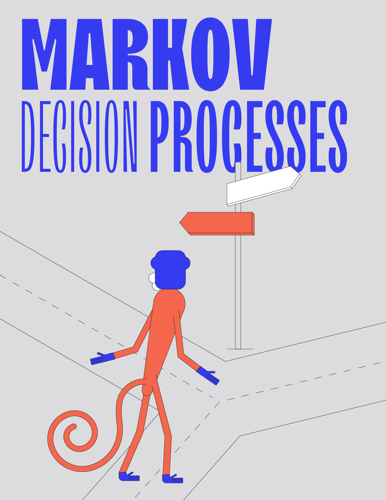

Markov Decision Processes

\[ \begin{align}\begin{aligned}\newcommand{\expv}{\mathbb{E}} \newcommand{\discProbDist}{f} \newcommand{\sampleSpace}{S} \newcommand{\sigmaAlg}{\mathcal{F}} \newcommand{\probm}{\mathbb{P}} \newcommand{\rvar}{X} \\\newcommand{\actions}{A} \newcommand{\colouring}{c} \newcommand{\probTranFunc}{\Delta} \newcommand{\edges}{E} \newcommand{\colours}{C} \newcommand{\mdp}{\mathcal{M}} \newcommand{\vinit}{v_0} \newcommand{\cylProb}{p} \newcommand{\emptyPlay}{\epsilon} \newcommand{\objective}{\Omega} \newcommand{\genColour}{\textsc{c}} \newcommand{\quantObj}{f} \newcommand{\quantObjExt}{\bar{\quantObj}} \newcommand{\indicator}[1]{\mathbf{1}_{#1}} \newcommand{\eps}{\varepsilon} \newcommand{\maxc}{\max_{\colouring}}
\newcommand{\winPos}{W_{>0}}
\newcommand{\winAS}{W_{=1}}
\newcommand{\cylinder}{\mathit{Cyl}}
\newcommand{\PrePos}{\text{Pre}_{>0}}
\newcommand{\PreAS}{\text{Pre}_{=1}}
\newcommand{\PreOPPos}{\mathcal{P}_{>0}}
\newcommand{\OPAS}{\mathcal{P}_{=1}}
\newcommand{\safeOP}{\mathit{Safe_{=1}}}
\newcommand{\closed}{\mathit{Cl}}\\\newcommand{\reachOP}{\mathcal{V}}
\newcommand{\discOP}{\mathcal{D}}
\newcommand{\valsigma}{\vec{x}^{\sigma}}
\newcommand{\lp}{\mathcal{L}}
\newcommand{\lpdisc}{\lp_{\mathit{disc}}}
\newcommand{\lpreach}{\lp_{\mathit{reach}}}
\newcommand{\lpmp}{\lp_{\mathit{mp}}}
\newcommand{\lpsol}[1]{\bar{\vec{#1}}}
\newcommand{\lpsolg}[1]{\bar{#1}}
\newcommand{\lpmpdual}{\lpmp^{\mathit{dual}}}
\newcommand{\actevent}[3]{\actions^{#1}_{#2,#3}}
\newcommand{\MeanPayoffSup}{\MeanPayoff^{\;+}}
\newcommand{\MeanPayoffInf}{\MeanPayoff^{\;-}}
\newcommand{\mcprob}{P}
\newcommand{\invdist}{\vec{z}}
\newcommand{\hittime}{T}
\newcommand{\playPay}{\textsf{p-Payoff}}
\newcommand{\stepPay}{\textsf{s-Payoff}}
\newcommand{\Pay}{\textsf{Payoff}}
\newcommand{\mec}{M}
\newcommand{\OPS}{\mathcal{S}_{=1}}
\newcommand{\smallmp}{\mathit{mp}}
\newcommand{\vgood}{v_{\mathit{good}}}
\newcommand{\vbad}{v_{\mathit{bad}}}
\newcommand{\finact}{fin}
\newcommand{\mecs}{\mathit{MEC}}
\newcommand{\slice}[2]{#1_{#2-}}
\newcommand{\ReachOp}{\mathcal{R}}
\newcommand{\dPayoffStep}[1]{\DiscountedPayoff^{\;(#1)}}
\newcommand{\solvset}{S}
\newcommand{\Eve}{\textrm{Eve}}
\newcommand{\Adam}{\textrm{Adam}}
\newcommand{\set}[1]{\left\{ #1 \right\}}
\newcommand{\N}{\mathbb{N}}
\newcommand{\Z}{\mathbb{Z}}
\newcommand{\Zinfty}{\Z \cup \set{\pm \infty}}
\newcommand{\R}{\mathbb{R}}
\newcommand{\Rinfty}{\R \cup \set{\pm \infty}}
\newcommand{\Q}{\mathbb{Q}}
\newcommand{\Qinfty}{\Q \cup \set{\pm \infty}}
\newcommand{\argmax}{\textrm{argmax}}
\newcommand{\argmin}{\textrm{argmin}}
\newcommand{\Op}{\mathbb{O}}
\newcommand{\Prob}{\mathbb{P}} \newcommand{\dist}{\mathcal{D}} \newcommand{\Dist}{\dist} \newcommand{\supp}{\textrm{supp}}
\newcommand{\game}{\mathcal{G}} \renewcommand{\Game}{\game} \newcommand{\arena}{\mathcal{A}} \newcommand{\Arena}{\arena}
\newcommand{\col}{\textsf{col}} \newcommand{\Col}{\col}
\newcommand{\mEve}{\mathrm{Eve}}
\newcommand{\mAdam}{\mathrm{Adam}}
\newcommand{\mRandom}{\mathrm{Random}}
\newcommand{\vertices}{V} \newcommand{\VE}{V_\mEve} \newcommand{\VA}{V_\mAdam} \newcommand{\VR}{V_\mRandom}
\newcommand{\ing}{\textrm{In}}
\newcommand{\Ing}{\ing}
\newcommand{\out}{\textrm{Out}}
\newcommand{\Out}{\out}
\newcommand{\dest}{\Delta}
\newcommand{\WE}{W_\mEve} \newcommand{\WA}{W_\mAdam}
\newcommand{\Paths}{\textrm{Paths}} \newcommand{\play}{\pi} \newcommand{\first}{\textrm{first}} \newcommand{\last}{\textrm{last}}
\newcommand{\mem}{\mathcal{M}} \newcommand{\Mem}{\mem}
\newcommand{\Pre}{\textrm{Pre}} \newcommand{\PreE}{\textrm{Pre}_\mEve} \newcommand{\PreA}{\textrm{Pre}_\mAdam} \newcommand{\Attr}{\textrm{Attr}} \newcommand{\AttrE}{\textrm{Attr}_\mEve} \newcommand{\AttrA}{\textrm{Attr}_\mAdam} \newcommand{\rank}{\textrm{rank}}
\newcommand{\Win}{\textrm{Win}}
\newcommand{\Lose}{\textrm{Lose}}
\newcommand{\Value}{\textrm{val}}
\newcommand{\ValueE}{\textrm{val}_\mEve}
\newcommand{\ValueA}{\textrm{val}_\mAdam}
\newcommand{\val}{\Value}
\newcommand{\Automaton}{\mathbf{A}}
\newcommand{\Safe}{\mathtt{Safe}}
\newcommand{\Reach}{\mathtt{Reach}}
\newcommand{\Buchi}{\mathtt{Buchi}}
\newcommand{\CoBuchi}{\mathtt{CoBuchi}}
\newcommand{\Parity}{\mathtt{Parity}}
\newcommand{\Muller}{\mathtt{Muller}}
\newcommand{\Rabin}{\mathtt{Rabin}}
\newcommand{\Streett}{\mathtt{Streett}}
\newcommand{\MeanPayoff}{\mathtt{MeanPayoff}}
\newcommand{\DiscountedPayoff}{\mathtt{DiscountedPayoff}}
\newcommand{\Energy}{\mathtt{Energy}}
\newcommand{\TotalPayoff}{\mathtt{TotalPayoff}}
\newcommand{\ShortestPath}{\mathtt{ShortestPath}}
\newcommand{\Sup}{\mathtt{Sup}}
\newcommand{\Inf}{\mathtt{Inf}}
\newcommand{\LimSup}{\mathtt{LimSup}}
\newcommand{\LimInf}{\mathtt{LimInf}}
\newcommand{\NL}{\textrm{NL}}
\newcommand{\PTIME}{\textrm{PTIME}}
\newcommand{\NP}{\textrm{NP}}
\newcommand{\coNP}{\textrm{coNP}}
\newcommand{\PSPACE}{\textrm{PSPACE}}\end{aligned}\end{align} \]
Written by Petr Novotný
In this chapter we study Markov decision processes (MDPs), a standard model for decision making under uncertainty. MDPs are also called \(1\frac{1}{2}\)-player games, since they can be viewed as a game in which only one player (say Eve) makes strategic choices, while the other player, which we call Nature, behaves according to some fixed probabilistic model. The chapter surveys the basic notions pertaining to MDPs, and algorithms for the following MDP-related problems:
positive and almost-sure reachability and safety,
discounted payoff,
mean-payoff in strongly connected MDPs,
decomposition of MDPs into maximal end-components (MECs),
reductions of general mean-payoff MDPs, Büchi MDPs, and parity MDPs to general reachability MDPs (via the MEC decomposition),
solving general reachability in MDPs.

{kind=link}